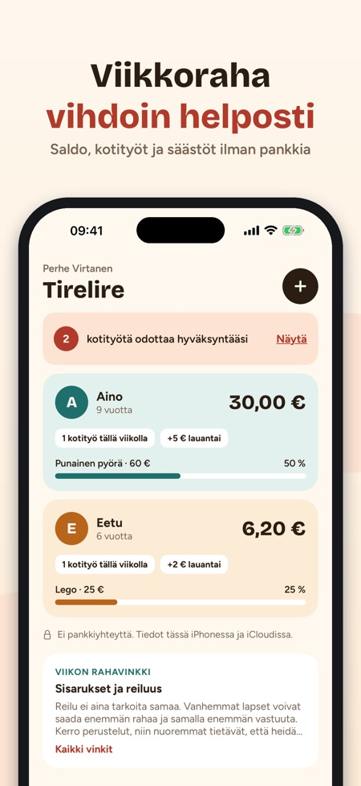
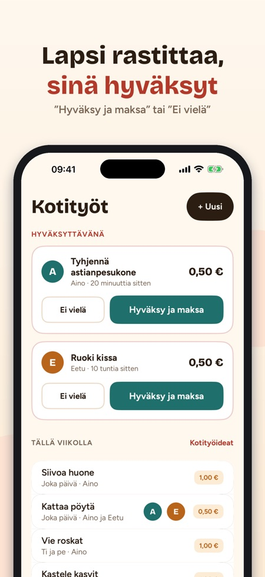
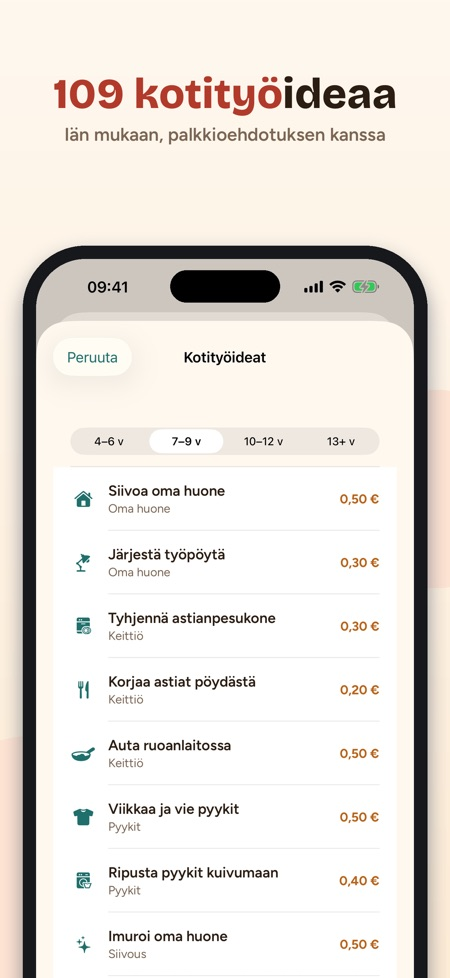

Kotityöt, säästöt ja palkkiot. Jokaisen lapsen saldo, hyväksyttävät kotityöt ja säästötavoite – jaettuna molemmille vanhemmille iCloudissa. Ilman pankkia, korttia ja mainoksia.



Tirelire pitää kirjaa lastesi viikkorahoista, palkitsee kotitöistä ja auttaa säästämään johonkin tärkeään. Pankkia tai korttia ei yhdistetä: sovellus pitää vain kirjanpitoa, ja kolikot pysyvät oikeassa säästöpossussa.
JOKAISEN LAPSEN SALDO
• Kortti jokaiselle lapselle: saldo, viikon kotityöt, seuraava viikkoraha ja tavoite
• Viikkoraha lisätään itsestään valittuna päivänä, vaikka sovellus olisi ollut kiinni
• + Lisää / − Ostos kahdella napautuksella, koko historia tallessa
KOTITYÖT, JOISTA SAA PALKKION
• 109 kotityöideaa iän mukaan (4–6, 7–9, 10–12 ja 13+ v) ja palkkioehdotus
• Kerran, joka päivä, tiettyinä päivinä tai kerran viikossa
• Lapsi rastittaa, sinä hyväksyt: ”Hyväksy ja maksa” tai ”Ei vielä”. Puoliksi tehty? Maksa puolet.
TAVOITE, JOKA INNOSTAA
• 32 tavoitepohjaa: pyörä, peli, retki, lahja…
• Rengas näyttää edistymisen ja arvion siitä, milloin tavoite täyttyy
• ”Nopeammin perille” ehdottaa ikään sopivia kotitöitä
YKSINKERTAINEN LAPSITILA
• Sinun tai lapsen omalla iPhonella: oma saldo, tavoite ja päivän kotityöt
• Lapsi rastittaa tehdyt työt; takaisin vanhempien näkymään Face ID:llä tai pääsykoodilla
• 14 merkkiä ansaittavana
MOLEMMILLE VANHEMMILLE
• Kutsu toinen vanhempi iCloud-jaolla: samat saldot, kumpikin hyväksyy omalla iPhonellaan
• 35 vinkkiä rahasta puhumiseen lapsen iän mukaan
• Widget, muistutus viikkorahapäivänä, CSV-vienti, euro, kruunu, punta, Sveitsin frangi tai dollari
OSTO
Yhden lapsen kanssa käytettävissä ilman ostoa. Kertaosto avaa rajattomasti lapsia, jakamisen toisen vanhemman kanssa, lapsitilan ja widgetin. Ei tilausta.
Perheen tiedot pysyvät iPhonessa ja omassa iCloudissasi. Nimettömiä käyttötilastoja lähetetään vain luvallasi, ja valintaa voi muuttaa Asetuksista; lapsitilassa mitään ei lähetetä.